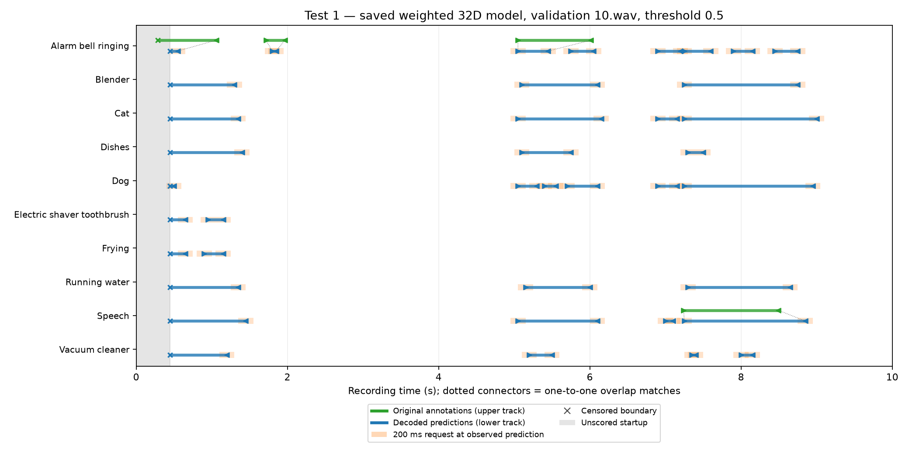

Device / Nano 33 BLE Sense + Zephyr
Audio input → finite PCM history → CNN encoder
Retain recent audio and transmit compact features. Return a requested segment while it is still available.
Device deployment plannedSend compact features first. Retrieve a little more audio when it can help—and while there is still time.
Junchi Chen & Wei Zhang · Project 13
How can a receiver select useful audio segments from an MCU's limited buffer to improve sound-event boundaries under changing communication conditions and reporting deadlines?
Continuous raw-audio transmission costs bandwidth. A small device encoder sends learned features; a laptop detects events and may request original audio around uncertain boundaries. The research focus is deciding which requests are worth their cost.
Audio input → finite PCM history → CNN encoder
Retain recent audio and transmit compact features. Return a requested segment while it is still available.
Device deployment plannedFeature sequence → causal GRU → event boundaries
A controller will choose segment location and length. An audio/context refiner updates onset and offset estimates.
Offline models implementedDevice → features / requested PCM · Laptop → timestamped audio requests
Intended architecture. The online receiver, finite audio buffer, transport and deadline-aware controller are not yet implemented in this repository.
| Mode | What it checks | Status |
|---|---|---|
| Offline Python | Detection and audio-refinement value on recorded data | Preliminary evidence |
| Zephyr native_sim + Python | Paced replay, buffer ownership and requests | Project integration planned |
| Physical Nano + Python over USB | Actual capture, memory, inference and communication | Planned |
A separate local course setup passed smoke/queue simulation and compiled the acoustic firmware. These are setup checks, not project-system or physical board results. Native_sim does not reproduce Nano execution speed or energy.
November 2 offline feasibility check: a CNN + causal GRU processes 16 kHz audio in 500 ms windows, advancing every 50 ms. A frozen 32D baseline is compared with 200 ms raw-audio refinement and a context-only correction head.
| Method | Matched-boundary MAE ↓ | Extra raw audio |
|---|---|---|
| Initial estimate | 380.2 ms | None |
| Audio + context refinement | 373.6 ms | Fixed 200 ms segments |
| Context-only correction | 372.4 ms | None |
117 eligible matched boundaries from 32 validation recordings; identical initial event pairs and censoring exclusions, with abstentions retained. Baseline fitting used 128 training recordings. Refinement used separate training recordings (192 fitting / 64 development). These are timing scores on matched boundaries, not full detection scores.
What this supports: audio can help when the requested segment captures the true boundary. What remains unproven: overall benefit over context-only or performance under real buffer and deadline constraints. Event detection did not improve; 693 of 762 initial predictions were unmatched. The next experiments must test request value and coverage.
Across validation retrievals, 1,382 complete 200 ms requests cost 8,844,800 PCM payload bytes; 1,263 came from unmatched predictions. Transport headers and retries were excluded. Only ten captured offsets were available, and results use one seed and a small synthetic subset.


Checkpoint 3: four slides, six minutes; presentation November 12, 2026, 5:14 p.m. Los Angeles time. Initial slides are due November 10 at 4 p.m. The checkpoint PDF has not been added yet.
Our proposed extension focuses on selecting temporal audio segments from expiring MCU history for on-time boundary refinement. The request policy and its advantage remain to be implemented and evaluated.